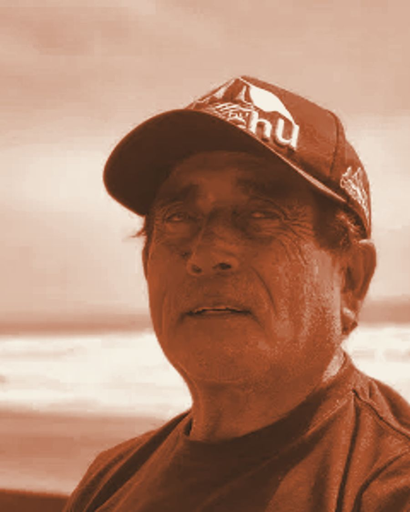

Pascual lee tu mensaje y te devuelve la llamada a la brevedad.

Pascual Freire Muñoz aprendió el oficio de niño, junto a su padre, entre géneros, tachuelas y estructuras de madera. Lo que empezó como ayudar en el taller se convirtió en una vida entera dedicada a la tapicería.
Hoy, con más de 40 años de trayectoria, es uno de los pocos talleres artesanales de este tipo que van quedando: trabajo hecho a mano, sin apuros, con el cuidado que cada pieza merece. Hoy Pascual se dedica por completo a las sillas — desde la estructura hasta el tapizado final — trabajando cada una con el mismo cuidado de siempre.
Retapizado completo de asiento y respaldo: renovación de relleno, cinchas y género, con terminaciones en tachuelas a elección.
Reparación integral de la pieza: encolado y refuerzo de la estructura de madera, y tapizado final fiel al estilo original.
Sillas de restaurantes y locales comerciales, por unidad o en serie.
Barniz de patas, respaldos y detalles de madera, para que la silla quede completa.
Muestrario de géneros y distintos tipos de tachuelas, según lo que necesita tu silla.
Trabajamos exclusivamente sillas individuales. No tapizamos sofás, sillones de 2 o 3 cuerpos ni muebles de gran tamaño.
Hablas directamente con Pascual, quien hace el trabajo. Sin intermediarios ni vueltas: atención cercana de principio a fin.
Presupuestos transparentes y precios razonables, acordados antes de empezar. Sabes exactamente qué se hará y cuánto costará.
Eliges el género y las tachuelas desde el muestrario del taller, según el estilo de tu mueble y tu presupuesto.
Atendemos todo San Antonio y sus alrededores, incluyendo Las Rocas de Santo Domingo — zona de casas con sillas antiguas que merecen una segunda vida.
¿Vives cerca? Escríbenos y coordinamos la entrega de tus sillas en el taller.